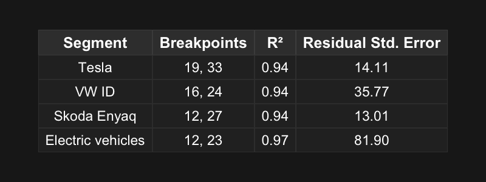

Tesla Trend Analysis – Used Car Market 2024–2025
Visual analysis of structural shifts in Tesla listings and prices during 2024–2025 in the Danish used car market.
1 🯠Objective
This project takes a retrospective view to explore structural shifts in the Danish used car market during 2024–2025 — with a particular interest in whether Tesla responded differently than comparable brands.
The aim is to test whether meaningful patterns in market data can be surfaced — early and clearly — through close monitoring of retail activity.
2 📋 Executive Summary
This summary highlights how Tesla’s behavior diverged from the broader EV market during a period of structural change.
Tesla shifted later — and followed a different path
After July 2024, clear breakpoints in listing activity emerged across the Danish used car market. While most segments — including the total market — showed an early surge, Tesla’s shift came later and unfolded more gradually. It also reached its second structural breakpoint significantly later than its peers. Unlike VW ID, Skoda Enyaq, and the broader EV market, Tesla didn’t show a sharp inflection — but rather a prolonged and distinct transition.Price sensitivity varies across brands
Most brands followed textbook supply–demand logic: more listings → lower prices. Tesla deviated from this pattern, maintaining stable prices even as volumes grew — suggesting centralized pricing or greater insulation from market forces.Political events and volatility
Tesla’s price volatility spiked following Musk’s endorsement of Donald Trump in July 2024, with sharper weekly fluctuations not seen in VW ID, Skoda Enyaq, or the broader EV segment. This divergence was most pronounced after the first political event, and less so after later ones.Tesla moves on its own terms
Tesla’s volume shifts are not noise: the segmented regression model fits well (R² ≈ 0.94), confirming a measurable pattern. Combined with Tesla’s stable pricing, this supports the interpretation of brand-specific behavior — distinct from broader EV dynamics.Strategic implication
Consistent monitoring of market data can reveal early structural patterns — offering an edge in navigating fast-moving markets.
3 ğŸ› ï¸ Setup
All required packages are loaded in the processing chunk below. No special configurations were needed to run this analysis. The document executes entirely within a local R environment via Quarto.
4 🧪 Data Processing
This analysis is based on listing data from the Danish used car marketplace Bilbasen, provided via TrackSights. The dataset includes all retail listings with a price of at least 10,000 DKK and spans from July 1, 2024, to March 14, 2025.
We applied the following preprocessing steps:
Date parsing and filtering
Listings were parsed usingCreatedDateand filtered to include only validRetailPriceentries. Listings with prices below 10,000 DKK were excluded, as were entries within a defined holiday period (Dec 20 – Jan 5) due to anomalously low activity.Fuel type classification
Listings were grouped into two fuel groups based onFuelType:
• Electric (e.g. “el”, “electric”)
• Fossil (all non-electric drivetrains)Segment definition
Analytical segments were created using brand and model fields:
• Tesla
• VW ID (e.g. ID.3, ID.4, ID.5)
• Skoda Enyaq
• Electric vehicles – all listings classified as electric, including Tesla, VW ID, and Enyaq
• Fossil vehicles – all listings classified as fossil
• A sixth segment – Total market – was constructed for broader contextOutlier handling
To reduce noise from extreme values, we removed the top 0.5% of listings by price.Weekly aggregation
Listings were grouped by week usingfloor_date(). Weekly counts and medians were calculated for volume and price analyses.Event markers
Key political signals were added as vertical markers in the plots:
• July 13, 2024 – Elon Musk endorses Donald Trump
• November 5, 2024 – Trump wins the U.S. election
• January 15, 2025 – Trump is inaugurated
âš ï¸ A note on data consistency
Before February 26, 2025, the data pipeline relied on periodic full exports, taken at arbitrary intervals. From that point forward, listing data was pushed to the cloud hourly — offering consistent and structured tracking. While the earlier data gives a representative picture of market activity, week-level precision is stronger in the later period.
Taken together, the dataset provides robust insight into structural changes over time — even if early-week fluctuations should be interpreted with care.
In volatile and pattern-sensitive spaces like electric vehicles, being able to detect emerging structure is not a luxury — it’s an edge.
5 📊 Results
This section presents key analytical findings on market activity and structural shifts in listing volumes.
We explore:
- Market overview: How weekly listing volumes evolved across electric, fossil, and total market segments.
- Brand behavior: How Tesla’s listing activity compared to VW ID and Skoda Enyaq.
- Structural shifts: When breakpoints occurred, based on segmented regression analysis.
Together, these results reveal distinct growth trajectories and timing patterns across segments.
5.1 📈 Market overview – Total vs Electric vs Fossil
The chart below shows smoothed volume trends in weekly retail listings for the Danish used car market, grouped into electric vehicles, fossil vehicles, and the total market. The LOESS smoothing filters out short-term fluctuations to reveal the structural direction of change.
All three segments display a steady upward trajectory across the second half of 2024 and into early 2025. Fossil vehicles remain dominant in absolute volume, but electric vehicles show a more consistent growth path — gradually increasing their relative market share.
The curves flatten after mid-January — a shift visible across all major segments. While this timing aligns with the U.S. presidential inauguration (January 15, 2025), the causal link remains speculative.
Note:
The Christmas holiday period (December 20 to January 5) was excluded from the dataset to eliminate seasonal noise. This ensures that observed changes in listing volume reflect actual market dynamics. Key political events are annotated to highlight potential temporal correlations.
.png)
5.2 🚗 Brand comparison – Tesla vs VW ID vs Skoda Enyaq
The chart below shows smoothed weekly listing volumes for Tesla, VW ID, and Skoda Enyaq from July 2024 through early 2025. The LOESS curves reveal broader structural trends while filtering out short-term variation.
VW ID displays the highest and steepest volume growth, especially from December onward. Tesla and Skoda Enyaq follow more moderate paths, with Tesla showing the most delayed and gradual lift in volume.
The brand-specific trajectories suggest that while all three brands participated in the broader market expansion, they did so on different timelines — with Tesla’s curve marking a later and more measured transition.
.png)
5.3 🧩 Structural breakpoints
We use segmented regression to estimate structural shifts in listing volumes. The goal is to identify whether distinct breakpoints emerge in the trend for Tesla and its peers.
Method
A two-breakpoint model was applied to weekly volume data for each brand or segment. Breakpoints are expressed as week numbers from July 1, 2024.
The analysis covers:
- Tesla
- VW ID
- Skoda Enyaq
- Electric vehicles (entire EV market)
Findings
Tesla’s growth pattern stands out: - The first breakpoint occurs in week 19 – later than for any other brand. - The second breakpoint appears in week 33, indicating a longer and more delayed transition phase.
VW ID and Skoda Enyaq both shifted earlier, with breakpoints between weeks 12 and 27. Their transitions seem to complete sooner and follow a more compressed trajectory.

Interpretation
Tesla’s volume curve reflects a delayed but smooth expansion. Despite spanning more weeks, the segmented model fits well (R² = 0.94) and maintains low residual error (14.1), suggesting a predictable trend.
VW ID shows a more volatile pattern, with the highest residual error (35.8) despite an equally strong R². Skoda Enyaq also exhibits early growth but does so more consistently (RSE = 13.0).
Electric vehicles as a group perform well in terms of fit (R² = 0.97), but the aggregated nature of the data inflates residual noise (RSE = 81.9), indicating internal variation across brands.
In short: - Tesla: late and steady growth - VW ID: earlier transition, but noisier behavior - Skoda Enyaq: compact and consistent - EV aggregate: strong signal, but blurred by brand diversity.
5.4 ⏱️ Timing of breakpoints in listing trends
The chart below shows the estimated timing of structural shifts in weekly listing volume, based on segmented regression with two breakpoints per brand or segment.
Each line connects two breakpoints, representing the start and end of a key growth phase.
Key observations:
- Skoda Enyaq and Electric vehicles (all EVs) both exhibit early breakpoints – between weeks 11 and 13 – suggesting an early onset of volume growth.
- VW ID follows closely, shifting between weeks 16 and 24.
- Tesla enters its growth phase later, with a first breakpoint in week 19 and a second in week 33, indicating a more delayed and prolonged transition.

6 💸 Price dynamics
How did prices respond to shifts in listing volume? This section explores the relationship between weekly listing volumes and median retail prices across different segments.
We apply three analytical lenses:
- Correlation analysis — do higher volumes coincide with lower prices?
- Price–volume scatterplots — visualizing the relationship
- LOESS smoothing — uncovering broader structural price trends
Supplementary charts are provided in the Appendix.
6.1 📊 Correlation: Price vs. Volume
To assess whether weekly listing volumes and median retail prices moved together — or diverged across segments — we calculated the Pearson correlation for each brand.
The table below summarizes the results.
Interpretation
Tesla shows minimal correlation between weekly volume and median price, suggesting that volume shifts alone had little direct impact on pricing behavior.
In contrast, VW ID and Skoda Enyaq exhibit moderate negative correlations, meaning that as listing volumes increased, median prices tended to decline.
At the market level, both electric and fossil vehicles show even stronger negative correlations, indicating broader supply-driven pricing dynamics across the used car sector.
6.2 🧠Scatterplot – Volume vs median price for selected brands
Interpretation
This scatterplot shows how weekly listing volume (x-axis) relates to median retail price (y-axis) for three EV brands: Tesla, VW ID, and Skoda Enyaq.
Each point represents a single week, and each trendline shows the overall price–volume relationship for the brand.
Two visual cues guide the interpretation:
• Slope of the line — tells us how prices respond to changes in volume. A steep negative slope means prices tend to drop as listings rise – suggesting price sensitivity. A flatter slope indicates stable prices even with changing volume.
• Length of the line — reflects how much weekly volume varies. A longer line means the brand was listed across a wider range of volumes. A shorter line means supply stayed within a narrower range.
Findings
• VW ID combines a long line and a steep slope → high volumes, high sensitivity to supply
• Skoda Enyaq shows fewer high-volume weeks, but prices still decline as listings increase
• Tesla shows a short, flat trendline → stable pricing over a narrow volume band, suggesting a more centralized pricing approach
Together, the results illustrate that while volume and pricing often move together across brands, Tesla follows a different logic. Its pricing remained unusually stable even as listing volumes shifted — reinforcing the pattern of brand-specific behavior identified earlier in the correlation analysis.
6.3 💠Smoothed price trends
This chart applies LOESS smoothing to highlight structural price dynamics over time — revealing whether prices declined steadily, shifted abruptly, or remained stable.
Interpretation cues
Slope: sustained inclines or declines suggest underlying price trends
Curvature: inflection points indicate transitions or reversals
Separation: vertical distance between lines shows relative price levels across segments
Findings
• Fossil vehicles display a steady and consistent price decline across the period
• Electric vehicles follow a similar pattern, but with more fluctuation
• VW ID closely tracks the EV average – reinforcing its role as a representative segment
• Tesla stands out: prices remain flat and elevated, with a late-period uptick
• Skoda Enyaq starts high, but shows the steepest decline in the final weeks
These patterns suggest that Tesla has maintained stronger price stability, diverging from broader EV trends — supporting the idea of centralized pricing or brand-driven dynamics.
7 🧠Final takeaway
🚘 Tesla doesn’t just behave differently – it moves on its own terms.
Most segments followed textbook supply–demand logic: as listings increased, prices declined. Tesla defied that pattern. It entered its growth phase later than peers — and sustained that expansion without notable price cuts. This divergence signals brand-specific dynamics.
Why this might matter:
EV competitors: How should other EV brands respond to Tesla’s pricing resilience and distinct growth trajectory? At the very least, it’s a question worth asking. Reacting to volume shifts with blanket price cuts may not be the only viable strategy.
Car dealers: What are the implications for pricing and inventory when brands follow such different volume paths? A one-size-fits-all model risks mismatches between stock velocity and margin potential. Tailoring strategy to brand-specific behavior may be an untapped opportunity.
Early recognition of structural shifts isn’t a luxury — it’s a strategic edge.
In short, the pattern is visible – and we’ve surfaced the shift.
8 📉 Appendix: Weekly median retail prices
The chart below shows actual weekly median retail prices for Tesla, VW ID, and Skoda Enyaq — without smoothing. Compared to the LOESS-smoothed chart in Section 6.3, this raw view highlights short-term volatility and market-specific movements.
Three patterns stand out:
📠July 13 — Musk backs Trump: Tesla prices show immediate volatility and a sharp drop not observed for peers. This coincides with the endorsement and may reflect heightened market sensitivity.
🗳 November 5 — Trump elected: Again, only Tesla exhibits a notable dip in median prices during the election week, diverging from VW ID and Enyaq.
🛠January 15 — Trump inaugurated: Following this final political event, all brands show similar price movements.
While no causal inference is claimed, Tesla’s price path appears more event-sensitive and reactive than those of its peers — reinforcing the idea of brand-specific dynamics influencing listing behavior.